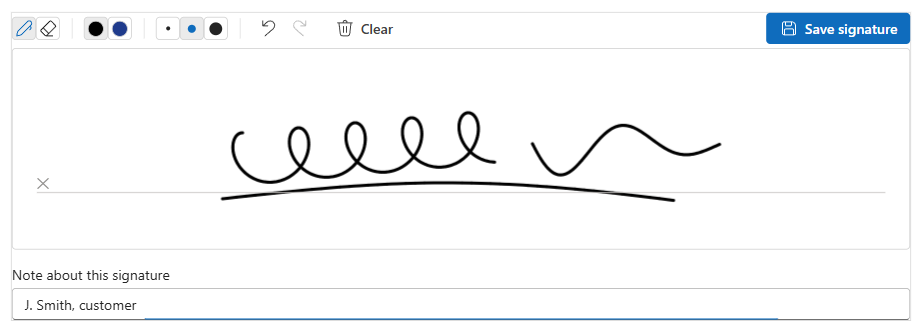
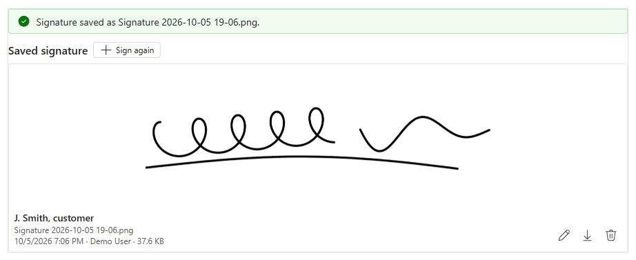
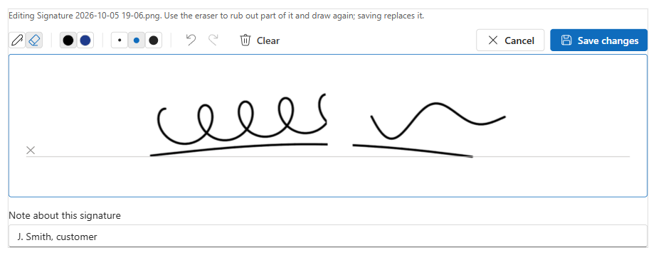
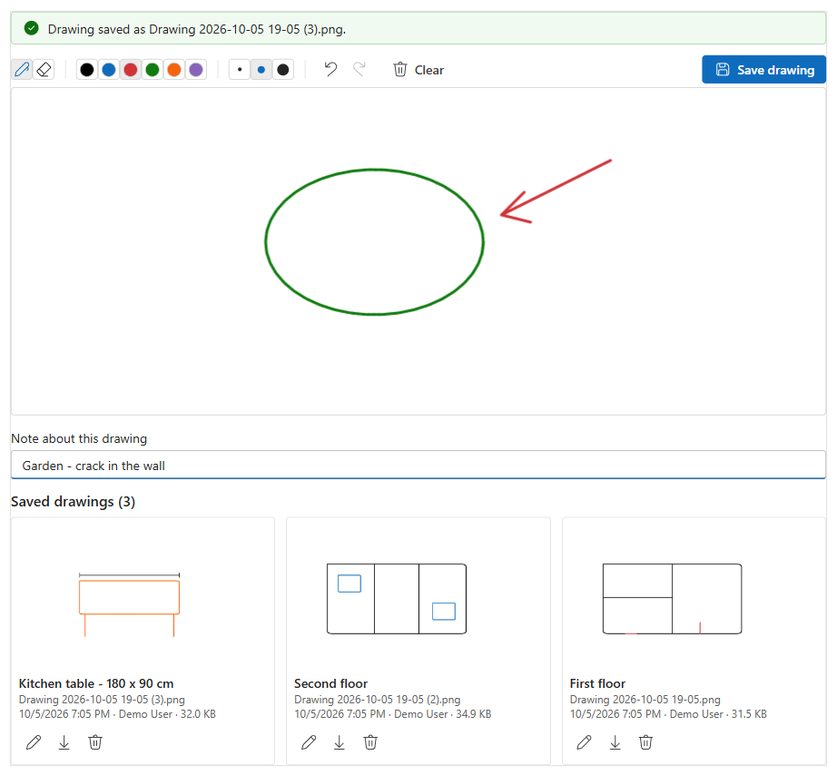

What the control looks like, then every screen you go through to put it on a form: what to click, what to type, and what to leave alone.
For every setting, security and update details see the full User guide (also as Word and PDF in this folder).
What users will see on the record
Real screenshotThese four are taken from the actual control, version 0.1.0, running in the PCF test harness. In CRM, "Demo User" is replaced by the person who saved the image.

Signing. Users sign on the white pad with a mouse, pen or finger. The toolbar has the pen and eraser, colours, three thicknesses, undo, redo and Clear. The note box under the pad is for the signer's name or what the picture is. Save signature saves it straight away as a Note on the record.

After saving (Signature mode). The saved signature replaces the pad, titled with the note. The pencil opens it on the pad again, the arrow downloads the PNG, and the bin deletes it after asking first. Sign again starts a new signature; by default it replaces the old one when saved.

Editing a saved image. The saved picture opens on the pad with its note. Here the eraser has rubbed out part of it, ready to draw that part again. Save changes updates the same Note; Cancel asks before throwing the changes away.

Drawing mode. A bigger pad with six colours, and the saved drawings listed under it, newest first. Each card shows the user's note (First floor, Kitchen table…) as its title, with the file name, date and size underneath.
ℹ Save the record first, then save the signature.
✎⌫↶ClearSave signature
Sign here✕
IllustrationNew record, not saved yet. Users can already sign, but Save waits until the record exists. Save the record, then click Save on the pad.
Saved signature
J. Smith
J. Smith, customer Signature 2026-10-05 19-06.png⤓
IllustrationRead-only form (an inactive record, or a user without edit rights): the saved image with Download only. No pad, edit or delete.
Timeline
AW
Note modified by Alex Wilson· 5/10/2026 7:06 PM
Signature
J. Smith, customer
📎 Signature 2026-10-05 19-06.png · 37.6 KB
AW
Note modified by Alex Wilson· 5/10/2026 7:05 PM
Drawing
Second floor
📎 Drawing 2026-10-05 19-05 (2).png · 34.9 KB
IllustrationThe same images in the record's Timeline. Every save is a normal Note: the title is the image name (or the "Note title" you set), the text is the user's note, and the PNG is attached. Flows and Word templates can pick it up from there. Refresh the Timeline to see new ones.
Before you start
You need the System Administrator or System Customizer role in the environment.
Only if you build the solution yourself: pac CLI (Power Platform CLI, recent version), Node.js and the .NET SDK (for dotnet build).
Decide which table gets the control and which mode: Signature (e.g. customer sign-off on a Work Order) or Drawing (e.g. damage sketches on an Inspection).
Labels on the illustrations follow the current Power Apps maker portal. Microsoft moves things around now and then, so a button may sit in a slightly different place, but the names stay the same.
1
Get the solution file
Open the Releases page, pick the latest Signature Pad release and download ArtSignaturePad_managed.zip under Assets. That's the file you import in step 2.
Prefer to build it yourself? You need the pac CLI, Node.js and the .NET SDK. In the SignaturePad folder of this repository run:
Want a quick try in a dev environment instead? Run pac auth create --environment https://yourorg.crm.dynamics.com then pac pcf push --publisher-prefix art in the SignaturePad folder, and skip to step 3.
2
Import it into your environment
make.powerapps.com/environments/…/solutions
Power AppsEnvironment: Contoso Dev
Home
Create
Apps
Tables
Flows
Solutions
+ New solution⭳ Import solutionOpen AppSource
Solutions
Display name
Version
Publisher
Default Solution
1.0
Default Publisher
Common Data Services Default Solution
1.0.0.0
CDS Default Publisher
Import a solution
Select a solution package to import.
ArtSignaturePad_managed.zip
Browse
After Next: check the details and click Import.
NextCancel
123
1Go to make.powerapps.com, check the environment at the top right, then Solutions → Import solution.
2Browse and pick ArtSignaturePad_managed.zip (or your own build's SignaturePadSolution.zip).
3Next, then Import. Wait for "Solution imported successfully" (about a minute).
3
Prepare the table (once per table)
3a · Allow notes. Account, Contact, Case, Lead, Opportunity and Work Order already allow them; skip this for those. For your own table, open Tables → your table → Properties → Advanced options:
Edit table: Inspection✕
Advanced options ⌃
Make this table an option when:
Creating a new activity
Doing a mail merge
Enable attachments (including notes and files)
Track changes
SaveCancel
1
1Tick Enable attachments (including notes and files) → Save. This can't be turned off later.
3b · Add a host column. A code component has to sit on a column. This one needs a text column; the control only writes to it if you switch on "Fill host field when saved". Go to Tables → your table → Columns → + New column:
Overview
Columns
Relationships
Keys
Forms
Views
+ New columnEdit
Display name
Data type
Name
Single line of text
Inspection date
Date only
New column
Signature
Hosts the Signature Pad control
Single line of text
Optional
SaveCancel
1234
1+ New column.
2Display name: type Signature (any name is fine; it gets your environment's publisher prefix, e.g. new_signature). For a drawing pad, something like Sketches.
3Data type: Single line of text. This matters: the control only appears for text columns.
4Save. Leave Required as Optional for now; see "Make signing required" below the property table.
4
Put the column on the form
Go to Tables → your table → Forms and open the form of type Main. The form designer opens:
← BackUndoRedo+ ComponentForm settingsSaveSave and publish
Table columns
Search
AbcName
📅Inspection date
AbcSignature
AbcInspector
#Score
Tip: tick "Show only unused columns".
GeneralDetailsSign-off+ Add tab
Customer signature (1-column section)
Signature---
After step 5 this field shows the signing pad instead of a text box.
Signature · Column
Signature
Show label
Hide
Components ⌃+ ComponentUse a code component to show this column.
12345
1In Table columns on the left, find Signature.
2Optional but tidy: add a tab called Sign-off with a 1-column section called Customer signature, so the pad gets the full width.
3Drag Signature into that section, then click it so its properties open on the right.
4Under Components, click + Component. This opens step 5.
5After step 5, come back here and untick "Show label", so users see only the pad.
5
Choose the control and set it up
Add component✕
Search components
★Star rating
⇆Toggle
✍Signature Pad (AnkitRana-Tech)
≡Rich text editor control
Get more components
Signature Pad (AnkitRana-Tech)✕
Signature (bound)
Signature
empty = Signature / Drawing
Yes
Replace the earlier image
empty = image name
Optional
empty = black
empty = 3
empty = 200 / 360
White
Yes
No
WebMobileTablet
DoneCancel
1234
1Pick Signature Pad (AnkitRana-Tech). Not in the list? Click Get more components, find it under "Build by others" (or search "Signature"), tick it and Add.
2Choose the Mode: Signature or Drawing. For a first try, leave everything else as it is. See the property table for when to change them.
3Tick Web, Mobile and Tablet, so it shows on phones and tablets too, where signing with a finger is most natural.
4Done. Then do step 4's point 5 (untick "Show label").
Two pads on one form? Add the control to two different text columns and give each a different Image name, for example Customer signature and Engineer signature. Each pad only shows, replaces and deletes its own images.
6
Save, publish and check it
Click Save and publish (top right of the form designer). Wait for "Published".
Open your app, then an existing record of that table, and go to the tab with the pad. Press Ctrl+F5 once so the browser picks up the new control. You should see the pad like the first screenshot above.
Sign, type a note, and click Save signature. The saved signature should replace the pad, and a Note with the PNG should appear in the Timeline (after refreshing it).
Click the pencil, rub out part of it with the eraser, draw it again and Save changes. The card should update.
Open + New for that table. You should see "Save the record first, then save the signature."
Optional: try it on a phone or tablet in the Power Apps app, and sign with a finger.
The properties, and when to change them
Property
Leave as
What it does / when to change it
Host field
(set for you)
The text column from step 3b. Only written to when "Fill host field when saved" is Yes.
Mode
Signature
Signature: cropped to the ink; once saved, the signature is shown instead of the pad. Drawing: a bigger pad with six colours, saved drawings listed under it (newest first).
Image name
empty
File name without .png. Empty = Signature or Drawing. Set it when you have two pads on one form, or want e.g. Customer signature.
Replace keeps one image per record (the earlier one is deleted after the new one is saved). Choose Keep for drawings, so every sketch stays.
Note title
empty
The title of the Note in the Timeline. Empty = the image name.
Note with each image
Optional
The small text box under the pad, for First floor, Kitchen table or the signer's name. Required makes users fill it before saving; Off hides it. Saved as the Note's text and shown as the image's title.
Pen colour
empty
Starting colour, e.g. #1F3B8C for a dark blue "ink" signature. Empty = black.
Pen width (px)
empty
Starting thickness, 1 to 20. Empty = 3.
Pad height (px)
empty
Empty = 200 for signatures, 360 for drawings. The width always follows the form.
Image background
White
Transparent suits signatures placed on top of documents.
Allow delete
Yes
No = no delete button. Users' security roles still apply either way.
Fill host field when saved
No
Yes = the newest file name is written into the host column (cleared when the last image is deleted). Users then save the form. Use it to check for a signature in rules, views or flows.
Make signing required: set "Fill host field when saved" to Yes, then use a business rule (or make the host column required) so the record can't move on until the column has a value. A new record has to be saved once before it can be signed, so apply the rule after creation, for example on a status change.
What users need: permission to create notes and append them to the record, the same as attaching a file in the Timeline; write on notes to edit a saved image, and delete on notes to delete or replace one. Standard roles like Salesperson and Field Service - Resource already have this.
Not a certified e-signature. The control saves a picture of the signature plus who saved it and when. It doesn't verify identity or seal a document. For contracts that need that, use a dedicated e-signature service.
If something isn't right
The control isn't in the + Component list.Use Get more components in that panel. If it's not there either, the import in step 2 didn't finish, or you're in a different environment.
I still see a text box, not the pad.The form wasn't published, or the browser has the old form. Click Save and publish, then press Ctrl+F5 on the record. Also check that Web is ticked in step 5.
"Save the record first, then save the signature."Normal on a new record. Save it once, then click Save on the pad; the signature already drawn stays on the pad.
Saving fails with a message about objectid_…Notes aren't enabled on the table. Do step 3a.
Saving fails with a permission message.The user's security role can't create notes or append to this record. Fix it in their role.
A signature saved earlier doesn't show.The control only shows images whose file name matches its "Image name" (plus the date). If the setting was changed, or the file renamed, the old image is still in the Timeline but not on the pad.
The page scrolls instead of drawing on a phone.Start the stroke inside the white area; the pad only stops scrolling there.
The form says it has unsaved changes after signing."Fill host field when saved" is Yes, so the host column changed. Save the form.
Installing a newer version later
Download the newer ArtSignaturePad_managed.zip from the Releases page (or, for your own build, raise the version in ControlManifest.Input.xml and build again) and import it as in step 2; Power Apps offers an Upgrade. The forms that use the control pick it up on their own, and saved images stay where they are.